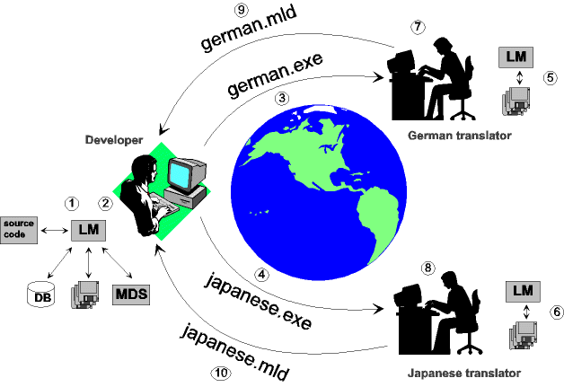

MULTILIZER supports the whole localization cycle and team. The Global Localization Workgroup (GLW) model gives developers and linguists an extremely cost-effective and flexible working environment.
In many times there is more than one person working with your localization project. Your might use professional translators when translating your program to the local language or you might use your local distributos. To make it possible for multiple person to work simultaneously with the dictionary there must be a way to break the dictionary into the pieces and finally to combines all the translations to a single dictionary.
Let's have an example where you want to translate your program to English, German and Japanese. Your native language is English but you do not speak German or Japanese. That's why you let the local reseller or a professional translator to translate the application to the locale languages.

The following paragraphs describe each steps.
The Language Manager Help contains more information about GLW.
It is now the time to make your first multilingual application.
 Make
your own application multilingual
Make
your own application multilingual